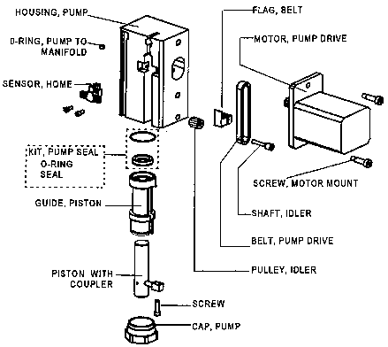

Replacing Wash Pump Seal
This procedure describes how to replace the wash pump seals.
Required Materials:
- Distilled water
- Lint-free tissue
- New wash pump seal
Perform this procedure when:
- Performing all PMC inspections
- Instrument displays poor washing
Use this diagram to identify the wash pump assembly components.
Note: New pump contains belt tensioner. The belt tensioner will be in the tensioned state when the tensioning screw has approximately 1-2 threads exposed. Ensure that the tensioner plate is in this state when reinstalling the pump.


- Home the wash pump.
- Power off the instrument.
-
Remove the wash pump.
-
Replace the wash pump seal.
-
Assemble the wash pump.
-
Install the wash pump.
- Confirm the presence of the o-ring for sealing the wash pump to the manifold. Align the wash pump with the manifold block, and slide the pump into place.
- Using an 3/32-in Allen wrench, tighten the Allen screws to secure the wash pump.
-
Connect these connectors to the fluidics interface PCB:
- J8 - Pump Home Sensor
- J23 - Wash Pump Motor Power
-
Verify the wash pump meets specifications.
- Complete one main pipettor prime cycle and one wash pump prime cycle, confirming that all the air is removed from the wash pump and manifold.
-
Verify system operation.